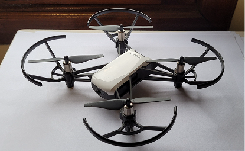
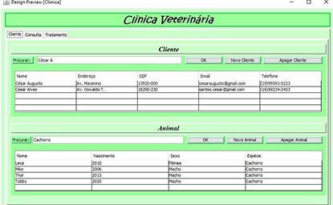
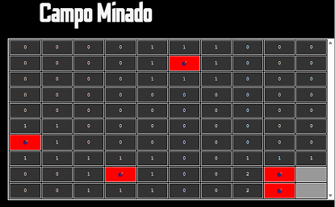

Drone Gesture Control
Sistema autônomo de controle para drones DJI Tello utilizando visão computacional (OpenCV) e reconhecimento de gestos (MediaPipe) em Python.
TCC Unicamp[ SYSTEMS / DATA / AUTOMATION ]
Sou Hugo Gomes de la Fuente, estudante de Sistemas de Informação na UNICAMP.
Focado em Cibersegurança, DevOps e Bancos de Dados para criar sistemas resilientes,
da infraestrutura à operação.
 SCROLL TO EXPLORE
SCROLL TO EXPLORE
// 01 · PERFIL
Atuo com uma visão sistêmica de ponta a ponta. Minha formação engloba engenharia de software (full-stack), redes de computadores e cibersegurança. Uno essas disciplinas para desenhar arquiteturas robustas e operações preparadas para o inesperado.
Na Unicamp, aprendi a entender o produto como um todo. Meu foco atual conecta essa visão com a execução: estruturação de bancos de dados, automação em Python e garantia de que a infraestrutura entregue desempenho e segurança.
// 02 · SELECTED WORK
SISTEMAS REAIS · DECISÕES RASTREÁVEIS · IMPACTO MENSURÁVEL

Sistema autônomo de controle para drones DJI Tello utilizando visão computacional (OpenCV) e reconhecimento de gestos (MediaPipe) em Python.
TCC Unicamp
Aplicação desktop de gestão desenvolvida em Java, aplicando padrões de arquitetura MVC e DAO com persistência em banco de dados MySQL.
Arquitetura MVC
Jogo Campo Minado web com sistema de contas via SessionStorage, histórico, ranking local e um modo especial contra o tempo.
Lógica JS pura// 03 · CAPABILITIES
DA CAMADA DE APLICAÇÃO À INFRAESTRUTURA · SEM SILOS
Python · C/C++ · Java · PHP
SQL Server · MySQL · MariaDB · Microsoft Access
Linux · Docker · Redes TCP/IP · Cloud
HTML5 · CSS3 · JavaScript · Figma
Gestão de Ameaças · Networking · Protocolos
OpenCV · MediaPipe · Llama / Local LLMs
// 04 · OPERATING MODEL
O CICLO COMPLETO DE DESENVOLVIMENTO E INFRAESTRUTURA
Contexto, risco e métricas antes da solução.
Arquitetura simples, contratos claros e guardrails.
Incrementos pequenos com feedback de produção.
Telemetria, resposta e melhoria contínua.
Programa Hackers do Bem (SENAI SP) e Gestão de Ameaças Cibernéticas (Cisco Networking Academy).
Gestão de projeto comunitário e ensino de lógica com Scratch e Python básico para alunos de escolas públicas.
Engenharia de Software, Bancos de Dados, Redes e TCC em Inteligência Artificial para drones.
// 05 · START_A_CONVERSATION
Estudante de Sistemas de Informação na Unicamp em busca de estágio. Tenho uma base sólida mas sou flexível, aprendo rápido e estou totalmente aberto a abraçar desafios e crescer em qualquer área da tecnologia.
Icones por Mary Akveo